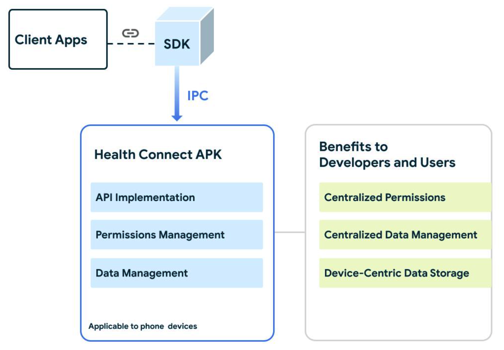
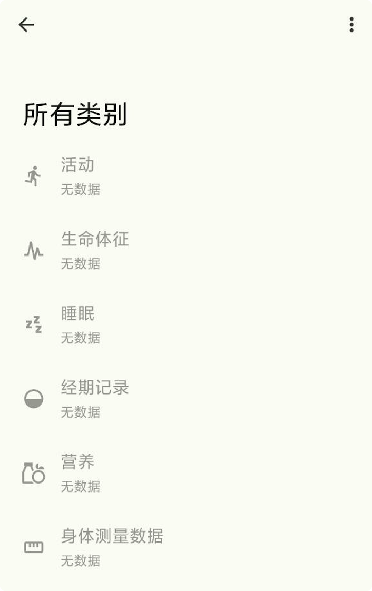
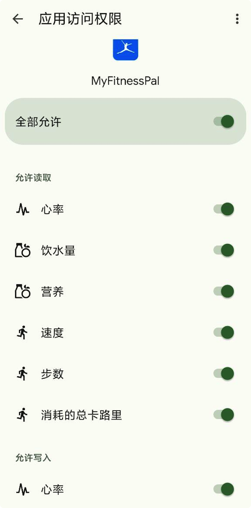
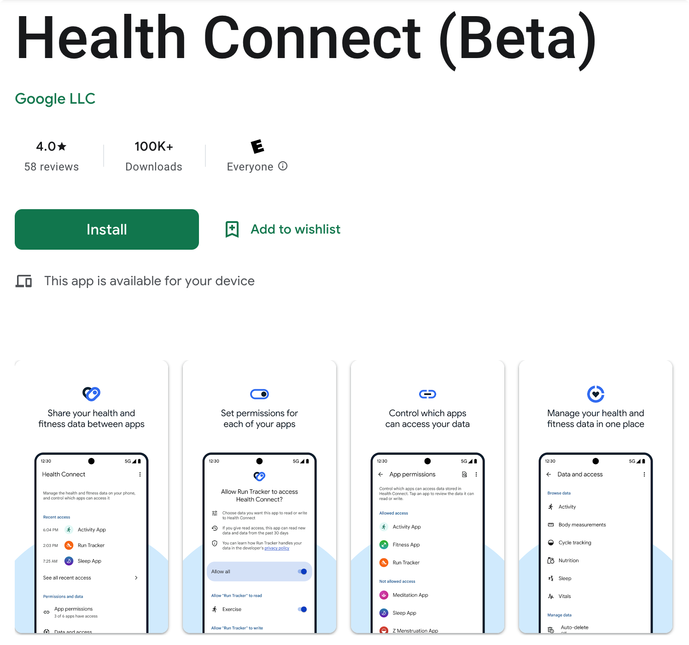
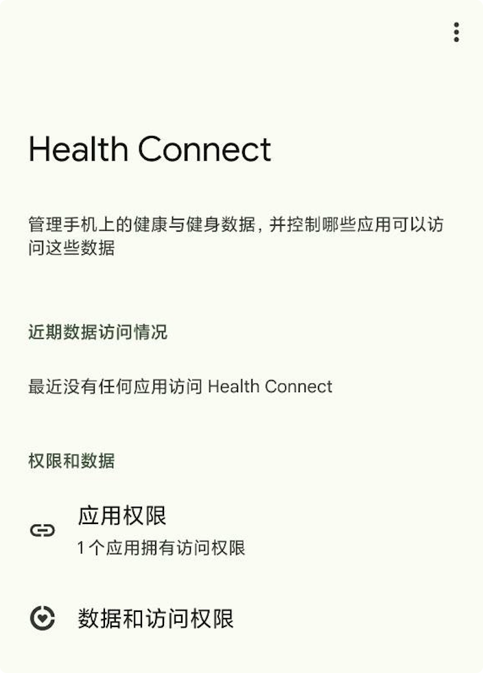
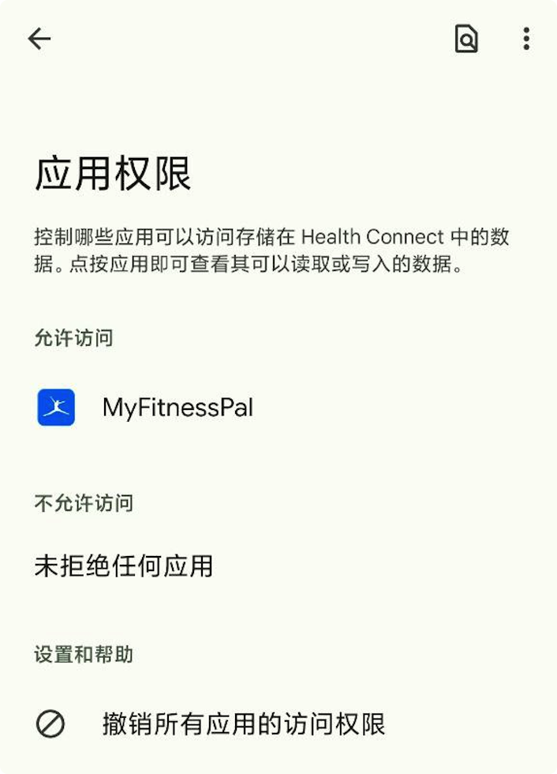
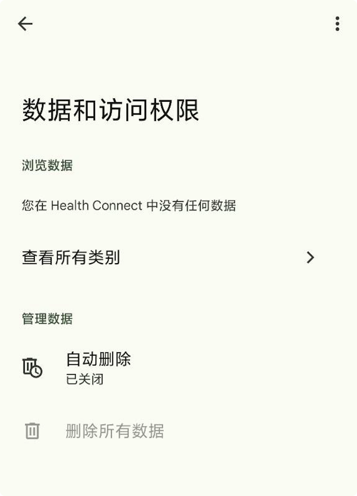
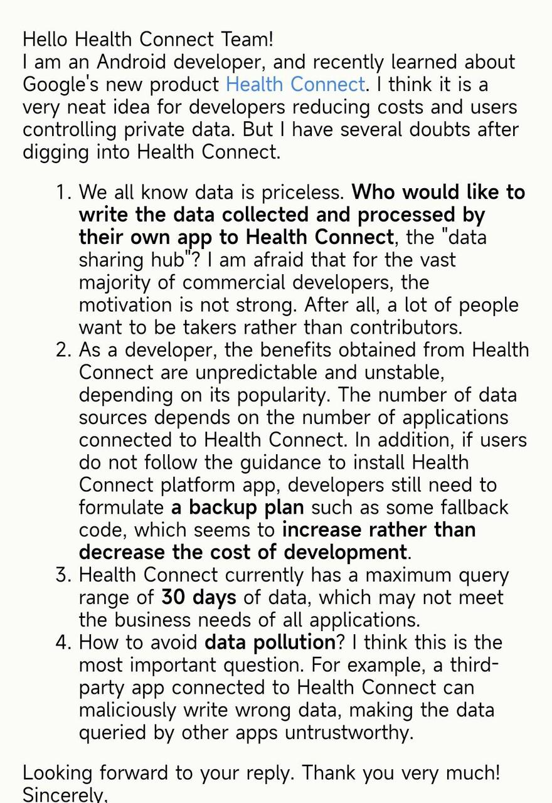
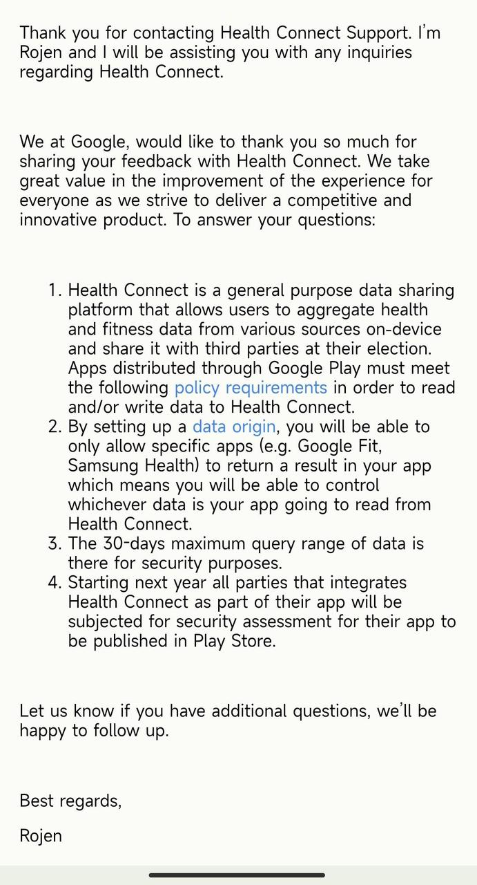

当Google关心起你的健康数据
此文为初稿备份，终稿已发布于少数派：https://sspai.com/post/77024
今年五月，在 Android 开发者官方博客中，Google 隆重介绍了一个新平台，名为 Health Connect，并推出了相应的 Android API。其官方网站用非常显眼的大标题和副标题简洁地描述了其核心功能与优势：简化健康类应用之间的连接。
Health Connect: simplify connectivity between apps
Health and fitness apps record valuable data. With permission from your users, you can unlock the full potential of this data by combining it to generate powerful insights.
粗略地看这应该是 Google 搞的一个平台化的东西。那么它具体是什么呢？又会给用户和开发者带来什么利益？
什么是Health Connect
如今健康和健身类的应用越来越多，各大厂商迅速占领这个细分市场，同时带动了可穿戴设备疯狂发展。众多类型的设备（包括智能手机和可穿戴设备）都搭载 Android 系统，许多健康应用都在 Android 设备上运行。同样地，Android 平台接口也提供各种各样的数据。但是，Android 用户希望通过单个数据库轻松便捷地掌控自己的健康与健身数据。作为开发者，在应用之间连接和共享这些数据也可以提升产品体验。然而，这些信息大多都分布在不同的地方，很难汇集在一起。
Google 认为这就是痛点所在，所以他们在今年上半年推出了 Health Connect。本质上，Health Connect 就是一套 Android API 和一个平台性质的独立应用。它将来自多个设备和应用的数据整合到一个生态系统中。
从 Health Connect 的整体设计架构示意图可以看出，它的实现原理也非常的简单，就是众多不同的三方应用通过 Health Connect 的 SDK 与一个中心化的平台应用进行跨进程通信，以共创共享数据。
给用户带来的好处
如果 Health Connect 的生态能够如愿发展成熟，各大健康应用纷纷接入，会给广大用户带来哪些好处呢？
集中的数据管理
除了基本的睡眠以外，跑步、骑车、爬山、冥想等活动正逐渐成为人们健康生活的一部分，大家也习惯下载各种细分领域的 App 来监测自己的健康和健身数据，比如运动距离、攀爬海拔高度、饮水量、体重、代谢率、心率、深浅睡眠时长等。这些数据往往产生自不同的时段，甚至不同的 App 会产生部分相同类型的数据，每次要查看它们都非常麻烦，不仅要同时打开多个 App，而且数据还不一定连贯。
如果它们都接入了 Health Connect，不同来源的数据就会被整合到一起，方便用户直接在一个 App 里面集中查看和管理所有类型的信息。
此外，还有个比较隐藏的优势便是用户可以借助该平台完成健康数据的迁移。比如当我们想在一款新的跑步应用 B 中继承使用旧应用 A 的步数信息时，Health Connect 就充当了一个公共信息通道的角色，B 可以直接读取 A 之前写入的数据。
方便的权限控制
用户安装了 Health Connect 之后，可以轻松和细粒度地掌控不同 App 的数据使用权限，从此不仅是数据的生产者，也是数据真正的主人了。
当我们觉得某些应用数据不需要或者不可靠时，可以禁止它的数据写入权限。在某些同质化比较严重的功能场景下，我们还可以自由地选择把数据读取权限授予某个 App，而禁止其他 App 访问。
在如此清晰的呈现之下，数据的“生杀大权”交到了用户手中，既提高了用户对这类隐私数据的敏感性，也有效地避免了应用对传感器数据的滥用。
可靠的隐私保障
现在一些记录和分析女性生理周期的 App 越来越多，虽然都打着关爱女性健康的名号，但用户总会担心它们不能提供可靠的数据安全保障，而这类数据往往比其他健康数据更具私密性。
如果女生们只选择完全接入了 Health Connect 的相关 App，那么这个问题就能得到很好的解决。因为 Health Connect 本身并不支持 Google 云同步，它只是一个加密的本地数据仓库，当它提供数据给三方 App 之前，除了用户可以自主管控外，也有完备的隐私政策限制与对三方 App 的安全性评估。
在Health Connect 政策要求常见问题解答中，我们可以了解到详细的政策细节，其内容开头也做了精简的描述：
Health Connect 应用会收集健康与健身数据，这可能包含个人数据和敏感数据。应用必须符合特定的政策要求，才能在 Health Connect 中读取和写入数据。
有了严格的审核机制和法律的保障，安心程度会提高不少。
如何使用Health Connect
对用户而言非常简单，只需要去 Google Play 下载安装 Health Connect 应用即可。需要注意的是，安装之后并不会像普通应用那样显示桌面图标，官方文档也提到了这一点：
注意：Health Connect 默认不再显示在主屏幕上。如需打开 Health Connect，请前往设置 > 应用 > Health Connect或将 Health Connect 添加到您的快捷设置菜单。
如果希望快速打开的话，可以考虑通过 AppManager 之类的三方应用自行创建快捷方式入口。
Health Connect 现在还在 Beta 阶段，安装之后如下图所示。我们可以看出来它非常的简洁，表现得更像是一个系统应用，一致的设计风格也让人自然地认为它是系统设置的一部分。

当你平时使用的健康健身类应用适配了 Health Connect API 之后，你就能愉快地享受这个平台带来的安全与便利了。虽然今年才推出，但目前支持的应用还不算少：

对开发者而言，官方技术文档非常的清晰，甚至还有 Demo，只需要几步即可接入使用：
- 在你的 Android 应用中集成 Health Connect SDK
- 声明所需权限并向用户请求
- 调用 Health Connect API 进行 CRUD 操作
唯一较多的工作量可能就是把应用自身采集到的健康数据，按 Health Connect 标准化要求的格式进行转化并写入，所以理解这一套标准化的数据类型和格式至关重要。此外，API 所包含的公共方法目前也很简单，从字面意思就能略知一二，举例几个关键 function：
- aggregateGroupByDuration
- aggregateGroupByPeriod
- deleteRecords（注：只能删除某应用自己写入的部分）
- getChanges
- insertRecords
- readRecord
- updateRecords
接口含义清晰，对开发者来说还是比较友好的。
给开发者带来的收益
收益可以分两方面讲，一是研发成本，二是用户体验。
首先，对健康健身类应用的开发者而言，成本肯定是大大降低了。接入方便，逻辑简单，且有 Google 官方的技术支持。如果你的应用仅仅只想做数据分析，在过去你不得不先去采集用户的健康数据，现在却可以完全依赖 Health Connect，不再需要调用与传感器（Sensor）相关的一系列高功耗接口，只需查询 Health Connect 存储整合好的数据即可。这对初创者来说无疑是一个福音。
除了降低应用的功耗本身就能提升用户的体验之外，开发者还可以通过 Health Connect 获取其他自己采集不到或者没必要采集的数据，为用户提供更加全面的分析结果。例如多个不同功能的应用在不同的时段进行了睡眠数据的采集，在 Health Connect 的帮助下，会整合到一起形成一个连贯的数据，提供任意时段的查询。
Google 为了推广 Health Connect 还专门撰写了一个用户体验开发指南，为开发者提供建议如何引导用户理解 Health Connect 的优势。当用户理解到例如隐私方面的好处之后，自然会更愿意使用接入了 Health Connect 的应用，这是一个良性循环。
可能存在的问题
敏锐的你看到这里，应该意识到了一些隐含问题。Google 的这个 Health Connect 虽然拥有美好的愿景和诸多优点，但肯定不是没有缺点的。我可以简单地列举一下目前能想到的一些问题：
- 在信息孤岛无数的今天，数据可谓无价，谁愿意把自家 App 采集和处理好的数据写入到 Health Connect 这个“数据共享中心”？恐怕对于绝大多数商业化开发者来说，动机不强，毕竟大家都想做那个索取者而不是贡献者。
- 作为开发者，从 Health Connect 获取的收益是不可知且不稳定的，取决于它的普及率，如果市面上接入的三方应用较少，就意味着数据来源少，此外如果用户不听从引导安装 Health Connect 平台应用，开发者仍然需要制定一套备份方案，似乎研发成本不降反升。
- Health Connect 目前有最多查询30天数据的范围限制，这并不一定能满足所有应用的业务需求。Google 想要在健康数据格式上做大一统，可能也难以考虑到所有细节情况。
- 如何避免数据污染？比如三方应用接入 Health Connect 后，恶意写入错误的数据。
针对这些问题，也不是完全无解。其中第2点和第3点都是客观情况，短期无法改变，普及率是一个时间问题，或者说资源的投入问题，功能限制也只能在开发者和用户的不断反馈中逐步优化了。
对于第1点，我猜测 Google 的算盘是这样的：由实力雄厚的大团队来扮演数据贡献者的身份，比如上图中的三星健康和 Google 健身，它们将可靠的健康数据写入到 Health Connect 中，其他中小团队就可以共享这些数据，如此一来降低了后者获取数据的成本，且随着行业数据标准化，会吸引更多团队加入。同时也是为了达到减少碎片化，提升用户体验的目的。
对于第4点，也算是一个客观的问题，我暂时想不到完美的办法，估计只能通过平台机制优化或者应用审核来解决了。
总的来说，Health Connect 的诞生有一个好的初衷，这也算是 Google 致力于解决应用生态碎片化的一环。站在 Android 系统这一层面来看，健康应用的开发者们正在生产大量的重复数据，浪费了用户的电池和存储空间。因此，Google 想要打造一个标准化的本地仓库来统一管控健康数据，为用户提供更好的体验，也不失为一个好的方向。
来自官方团队的回答
心血来潮，我把上面的4个问题整理了一封邮件发给 Health Connect 官方团队：
很快便收到回复，说请我等待，他去找 Leader，我颇为震惊。几天后，Leader 还真的认真回复了我的问题，不得不佩服他们的敬业（可能是闲）：
可以说，这位 Leader 的回复基本上详尽解答了我的那几个疑问。Google 方面主要还是通过政策和审核来严格管控接入方，避免数据不可信和污染的问题，并且和我猜测的一致，官方还是倾向于他们自己和大型合作方的应用来充当数据贡献者的身份。此外，回复中还提到一个我之前没关注到的点，就是每份数据都有 Data Origin，可以帮助用户很好地追溯数据来源，一定程度上也能避免恶意应用的干扰。
 支付宝（移动端点击二维码亦可）
支付宝（移动端点击二维码亦可）